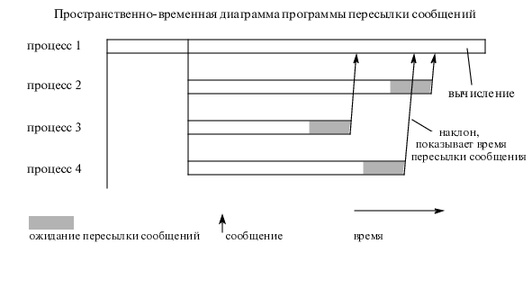

Фактор ускорения (speedup factor)
Определение:
Ускорением (speedup factor) параллельного алгоритма
в n-процессорной системе называется величина S(n):
S(n)=ts / tp
- где:
- ts -время выполнения алгоритма на одном процессоре
однопроцессорной системы,
- tp -время выполнения задачи на многопроцессорной
системе с n процессорами.
Максимальный фактор ускорения S(n)=n (линейное ускорение). В
общем случае S(n)< n, так как параллельный алгоритм обычно не может обеспечить
идеальной балансировки нагрузки процессоров.
Теоретически возможны алгоритмы с суперлинейным ускорением S(n)>n.
Это возможно, например,в алгоритмах поиска.
Рисунок, иллюстрирующий разбалансировку нагрузки процессоров:



 [Назад]
[Оглавление]
[Вперед]
[Назад]
[Оглавление]
[Вперед]
Последнее обновление 21.11.2001 WebMaster